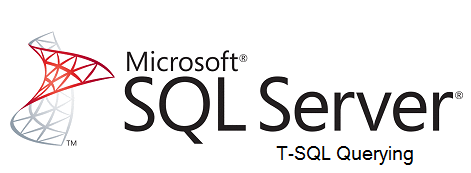

La importancia de las bases de datos es tan grande que son necesarias en los más diversos ámbitos, desde el sitio web más pequeño a la multinacional más grande. Formarte como Administrador de Bases de Datos SQL Server (uno de los sistemas de manejo de bases de datos más populares y utilizados del mundo) significará adquirir un perfil profesional muy atractivo y demandado en el mercado laboral de hoy en día, sobre todo si consideramos que cuenta con el aval de un gigante como Microsoft. El hecho de que las bases de datos resulten fundamentales para el funcionamiento de millones de empresas alrededor del mundo abre un gran mercado laboral para los Administradores de Bases de Datos SQL.
Objetivo General del Curso: Enseñar al estudiante a escribir consultas básicas
Contenidos del Curso: Introducción Bases de Datos Relacionales Sentencia Select Limitar el conjunto de resultados Consultar varias tablas Consultar información de varias tablas Ordenar y filtrar la información Usar funciones incorporadas Agrupar y totalizar información Utilizar subconsultas Usar expresiones de tabla Agrupaciones Combinando consultas Window Functions
Conocimientos que se adquieren: Optimizar el acceso a los datos (crear y afinar índices), Optimizar consultas, Programar la lógica del negocio a través de vistas, procedimientos almacenados y funciones, Comprender e implementar transacciones y manejo de excepciones.
Requisitos: Tener conocimiento de base de datos relacionales y experiencia de diseño (modelado –normalización) Experiencia en programación (variables, procedimientos, funciones) Poseer conocimientos básicos de Transact-SQL (sentencias select, insert, update, delete)
A quién va dirigido el curso: Personas con conocimientos básicos de bases de datos relacionales, profesionales en tecnologías de información relacionados con la administración y/o desarrollo de bases de datos y a profesionales encargados de planear, diseñar, implementar y dar soporte a base de datos SQL Server.
Haz click en el icono para obtener más información sobre el curso virtual. Más información
Conocé en el siguiente video todo lo que hace un SQL Server Querying.